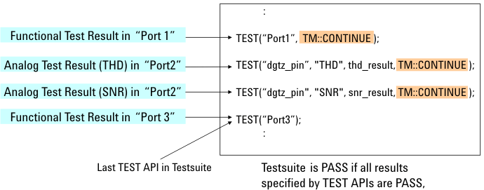
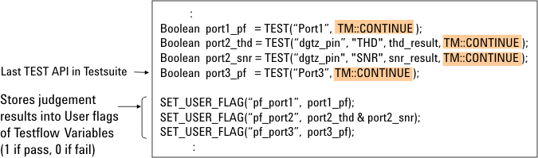
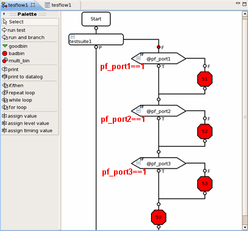

Judging Multiple Test Results in One Testsuite
How to judge pass/fail for each test result or each per-port test result in a testsuite is the same as for the non-multi-port test: specify "TM::CONTINUE" in each TEST API except for the last one in the testsuite.

To continue executing the program lines after the last TEST API even when the last TEST API judges the testsuite as fail, specify "TM::CONTINUE" for the last TEST API also.
For example, do this when you store the TEST API's judgment results into the user-defined testflow variables in order to assign a fail bin (or software bad bin) for each port in the testflow. The following figures show an example of this programming and an example of assigning a fail bin according to the testflow variable values (that is, the per-port judgment results) in the testflow. For details of testflow variables and bins on the Testflow Editor, see the manual "Test Setup".

